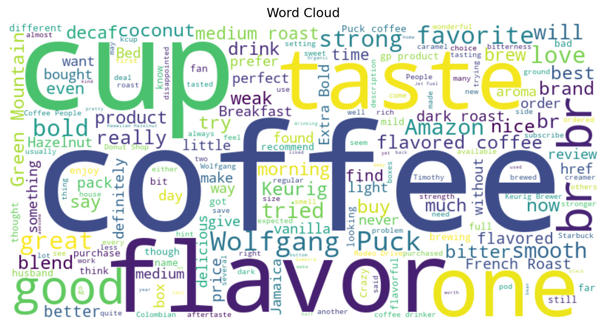
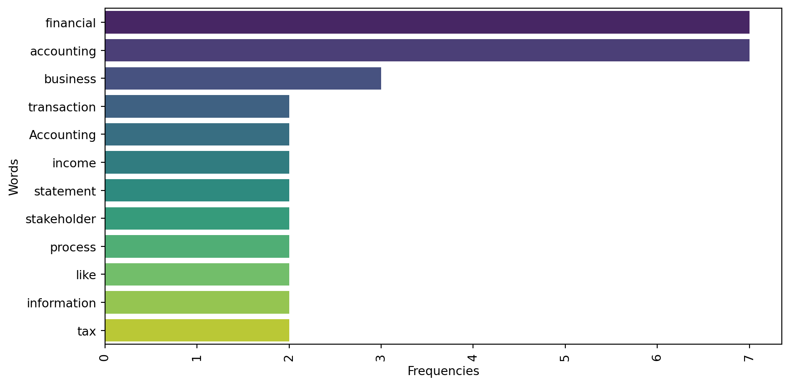

# An exmaple of a text data
my_text = """
Accounting is the systematic process of recording, analyzing, and reporting financial \
transactions. It helps businesses track their income, expenses, and overall financial \
health. Accountants use various financial statements, such as balance sheets and income \
statements, to summarize a company's financial position. Double-entry bookkeeping is a \
fundamental principle in accounting, ensuring that every transaction affects at least two \
accounts. Financial accounting focuses on providing information to external stakeholders, \
such as investors and creditors, while managerial accounting provides information to \
internal stakeholders, like managers, to aid in decision-making. Auditing is an essential \
aspect of accounting, involving the examination of financial records to ensure accuracy \
and compliance. Tax accounting deals with preparing tax returns and planning for \
future tax obligations. Forensic accounting involves investigating financial discrepancies \
and fraud. Accounting software, like QuickBooks and Xero, has revolutionized the way \
businesses manage their finances, making the process more efficient and accurate. \
Overall, accounting plays a crucial role in the financial management and transparency \
of businesses and organizations.
"""10 Natural Language Processing (NLP)
Learning Objectives of the Chapter
NoteLearning Objectives
At the End of the Chapter, Students should be Able to -
Learn about What Natural Language Processing (NLP) is
Understand the Importance and Difference Concepts of NLP
Learn about Different R and Python Packages for NLP
Perform Some NLP on Text Data
10.1 Introduction
In today’s data driven world, a significant amount data is produced each day. For example, Google processes 24 peta bytes of data every day; 10 million photos are uploaded every hour on Facebook; and 400 million tweets are posted on X (formerly Twitter). Of these amount of data, a significant portion consists of text data. Therefore, it it important to gain insights from text data.
Natural Language Processing (NLP), according to IBM, is a subfield of computer science and artificial intelligence (AI) that uses machine learning to enable computers to understand and communicate with human language. Specifically, NLP involves understanding, interpreting, and extracting insights from human language. Businesses use NLP for many purposes such as processing and analyzing large volume of documents, analyzing customer reviews, and scaling customer services (like developing chatbots or virtual assistants).
10.2 Python Libraries for NLP
Python has built a rich and efficient ecosystem for NLP. Some of the most popular python modules (libraries) for NLP include - nltk (Natural Language Toolkit); SpaCy; gensim; and TextBlob.
10.3 Steps in NLP
Like other data science tools or techniques, NLP involves several steps because most the time text data is not readily available or even if they are available, we need to clean the data and make it ready for next step processing. In this section, several important steps, which are called preprocessing, of NLP will be discussed.
10.3.1 Preprocessing
Before applying NLP techniques, it is necessary to preprosess and clean the text data. Therefore, the processes involving cleaning and preparing text data to get them ready for NLP models are called preprocessing. Preprocessing is very important in NLP to get effective and accurate insights from the data. Below we will discuss several important concepts of preprocessing.
10.3.1.1 Tokenization
import numpy as np
import pandas as pd
import nltk
nltk.download("punkt_tab")
from nltk.tokenize import sent_tokenize, word_tokenize# sentence tokenize
my_text_sent = sent_tokenize(my_text)
my_text_sent[0:5]['\nAccounting is the systematic process of recording, analyzing, and reporting financial transactions.',
'It helps businesses track their income, expenses, and overall financial health.',
"Accountants use various financial statements, such as balance sheets and income statements, to summarize a company's financial position.",
'Double-entry bookkeeping is a fundamental principle in accounting, ensuring that every transaction affects at least two accounts.',
'Financial accounting focuses on providing information to external stakeholders, such as investors and creditors, while managerial accounting provides information to internal stakeholders, like managers, to aid in decision-making.']# word tokenize
my_text_word = word_tokenize(my_text)
my_text_word[0:5]['Accounting', 'is', 'the', 'systematic', 'process']10.3.1.2 Removing Punctuation
It is evident that in our word tokens, punctuations like comma (,), full stop (.) are also included, but they are unncessary. Therefore, we need to eliminate them from the token list.
import string
my_text_nopunc = [x for x in my_text_word if x not in string.punctuation]
my_text_nopunc[:11]['Accounting',
'is',
'the',
'systematic',
'process',
'of',
'recording',
'analyzing',
'and',
'reporting',
'financial']10.3.1.3 Filtering Stop Words
Stop words are the words that we want to ignore. Words like “in”, “an”, “the” we want to ignore. Therefore, in this step, we want to filter out these kinds of words.
nltk.download("stopwords") # to download the stopwords from NLTK repository
from nltk.corpus import stopwords # imports the module
stop_words = set(stopwords.words("english")) # access the stopwords for english
# print(stop_words)my_text_nostopwords = [x for x in my_text_nopunc if x.lower() not in stop_words]
my_text_nostopwords[0:11]['Accounting',
'systematic',
'process',
'recording',
'analyzing',
'reporting',
'financial',
'transactions',
'helps',
'businesses',
'track'] Still we can see there are some unnessary words in the list. So, we need to eliminate them. For example, “’s” is in the my_text_nostopwords. We need to get rid of it.
"'s" in my_text_nostopwords
my_text_nostopwords = [x for x in my_text_nostopwords if "'s" not in x]
"'s" in my_text_nostopwordsFalse10.3.1.4 Stemming
Stemming is the process of reducing the words to their base or root form. For example, the token list contains words like recording, reporting, analyzing and so on. The base form of those words are record, report, and analyze respectively. Therefore, we need to reduce those words to base form. Stemming will help to do so. For this purpose, there are several types of stemmers such as Porter stemmer, Lovins stemmer, Dawson stemmer, Krovetz stemmer, and Xerox stemmer.
from nltk.stem import PorterStemmer,SnowballStemmer, LancasterStemmer
porter = PorterStemmer()
snowball = SnowballStemmer("english")
lancaster = LancasterStemmer()
[porter.stem(x) for x in my_text_nostopwords]
[snowball.stem(x) for x in my_text_nostopwords]
[lancaster.stem(x) for x in my_text_nostopwords][0:11]['account',
'system',
'process',
'record',
'analys',
'report',
'fin',
'transact',
'help',
'busy',
'track']10.3.1.5 Lemmatization
Lemmatization, like stemming, is the process of reducing a word to its base form, but, unlike stemming, it considers the context of the word.
from nltk.stem import WordNetLemmatizer
wordnet = WordNetLemmatizer()
my_text_lemmatized = [wordnet.lemmatize(x) for x in my_text_nostopwords]
my_text_lemmatized[:11]['Accounting',
'systematic',
'process',
'recording',
'analyzing',
'reporting',
'financial',
'transaction',
'help',
'business',
'track']10.3.1.6 Other Steps in Preprocessing
In addition to the above preprocessing, we might need to remove many other special characters from the text. These special characters include - hastags, HTML tags, links. For this purpose, knowledge about “regular expression” might be useful. Python built-in package re could be handy for regular expression. To learn more about regular expression - https://www.w3schools.com/python/python_regex.asp.
10.4 Visualization of Words
10.4.1 Word Cloud
Figure 10.1 shows a word cloud of our tokenized text.
from wordcloud import WordCloud
# We need a single string; So, it is tranformed below
my_text_lemmatizedSstring = ' '.join(my_text_lemmatized)
# Word Cloud
word_cloud = WordCloud(collocations = False, background_color = 'white').generate(my_text_lemmatizedSstring)
import matplotlib.pyplot as plt
plt.imshow(word_cloud, interpolation="bilinear")
plt.axis("off")
plt.show()Now we are going to present a word cloud of customer reviews about many products of a company.
customer_reviews = pd.read_csv("https://raw.githubusercontent.com/msharifbd/DATA/refs/heads/main/Customer_Reviews2.csv")
customer_reviews['ProductId'].value_counts().reset_index()
product1_reviews = customer_reviews[customer_reviews['ProductId'] == "B003VXFK44"]['Text'].to_list()
# Combine the text into a single string
combined_product1_reviews = " ".join(product1_reviews)
# Generate the word cloud
word_cloud = WordCloud(width=800, height=400, background_color='white', colormap='viridis').generate(combined_product1_reviews)
# Display the word cloud
plt.figure(figsize=(10, 5))
plt.imshow(word_cloud, interpolation='bilinear')
plt.axis('off')
plt.title("Word Cloud")
plt.show()
10.4.2 Bar Diagram of Word Frequency
Figure 10.2 shows the bar diagram of the words in tokenized list.
from collections import Counter
# calculate word frequencies
word_freq = Counter(my_text_lemmatized)
# extract word and their frequencies
words = list(word_freq.keys())
frequencies = list(word_freq.values())
# create a data frame
import pandas as pd
import seaborn as sns
word_df = pd.DataFrame(word_freq.items(), columns = ['Word', "Frequency"])
word_df = word_df.sort_values(by='Frequency', ascending=False)
# Create the bar diagram
plt.figure(figsize=(10, 5))
sns.barplot(y='Word', x='Frequency', data=word_df[word_df['Frequency']>1], palette='viridis')
plt.ylabel('Words')
plt.xlabel('Frequencies')
plt.xticks(rotation=90)
plt.show()
10.5 Vectorization of Text
Using word clouds or bar diagrams of most frequent words is easy to use and helps to quickly explore datasets. However, they suffer from some shortcomings. For example, they ignore context and are unable to capture the relations between words within the data. Therefore, sometimes we need convert the texts into numbers.
The process of converting text data into numeric vectors is called text vectorization. Text vectorization actually helps us to capture semantic relationships between words, thus allowing us to understand the meaning of text beyond just keywords. Further, it enhances processing of data. Moreover, vectorized text can be used for various NLP tasks such as document classification, sentiment analysis, and topic modeling. There are several techniques of text vectorization, spanning from simple to complex technieques.
10.5.1 Bag of Words (BoW)
Bag of Words is the simplest text vectorization technique. BoW counts the frequency of words in text documents. BoW does not consider the order of the words or syntax. “Dog toy” or “toy dog” have equal importance in BoW. In BoW, each document is represented as a vector of word frequencies. Actually, BoW generates document-term matrix, which is a m×n matrix, where m is the document and n is the term (word). So, the cell in the matrix contains raw count of the number of times the \(j\)-word appear in the \(i\)-th document.
10.5.2 Term Frequency-Inverse Document Frequency (TF-IDF)
TF-IDF is another text vectorization technique. It is basically an extension of BoW model and considers the importance or significance of words in the texts. Term Frequecny (TF) refers to the frequency at which a particular word appears in a document and IDF measures how rare a word is across a collection of documents. IDF assigns more weights to words that are frequent in a document, but rare across all documents1. Since TF-IDF takes into consideration the significance of the words, it is sometimes called Latent Semantic Analysis (LSA). Unlike BoW, the cell in TF-IDF matrix contains tf-idf score, which is calculated in Equation 10.12.
\[ w_{i,j} = tf_{i,j} × log\frac{N}{df_{i}} \tag{10.1}\]
In Equation 10.1, \(tf_{i,j}\) refers to the occurrences of term \(j\) in document \(i\); \(N\) is total number of documents; \(df_{i}\) is the number of documents that contain the term \(j\); and \(w_{i,j}\) is the tf-idf score in the TF-IDF matrix.
# using sklearn package
# preprocessing function
import re
import string
import nltk
from nltk.corpus import stopwords
from nltk.stem import PorterStemmer, WordNetLemmatizer
# Download necessary NLTK data
nltk.download('stopwords')
nltk.download('wordnet')
def preprocess_text(text):
# Lowercase the text
text = text.lower()
# Remove punctuation
text = text.translate(str.maketrans('', '', string.punctuation))
# Remove numbers
text = re.sub(r'\d+', '', text)
# Remove stopwords
stop_words = set(stopwords.words('english'))
text = ' '.join([word for word in text.split() if word not in stop_words])
# Lemmatization
lemmatizer = WordNetLemmatizer()
text = ' '.join([lemmatizer.lemmatize(word) for word in text.split()])
return text
def preprocess_documents(documents):
return [preprocess_text(doc) for doc in documents]# Bag of Words (BoW)
from sklearn.feature_extraction.text import CountVectorizer
texts = ["I love Accounting", "Accounting is called language of Business", "I will graduate with an Accounting degree"]
texts_processed = preprocess_documents(texts)
vectorizer = CountVectorizer()
X = vectorizer.fit_transform(texts_processed)
# Get the feature names (terms)
feature_names = vectorizer.get_feature_names_out()
feature_namesarray(['accounting', 'business', 'called', 'degree', 'graduate',
'language', 'love'], dtype=object)texts_processed['love accounting',
'accounting called language business',
'graduate accounting degree']print(X.toarray())[[1 0 0 0 0 0 1]
[1 1 1 0 0 1 0]
[1 0 0 1 1 0 0]]pd.DataFrame(X.toarray(), columns = feature_names)| accounting | business | called | degree | graduate | language | love | |
|---|---|---|---|---|---|---|---|
| 0 | 1 | 0 | 0 | 0 | 0 | 0 | 1 |
| 1 | 1 | 1 | 1 | 0 | 0 | 1 | 0 |
| 2 | 1 | 0 | 0 | 1 | 1 | 0 | 0 |
from sklearn.feature_extraction.text import TfidfVectorizer
vectorizer = TfidfVectorizer()
X = vectorizer.fit_transform(texts_processed)
print(X.toarray())[[0.50854232 0. 0. 0. 0. 0.
0.861037 ]
[0.32274454 0.54645401 0.54645401 0. 0. 0.54645401
0. ]
[0.38537163 0. 0. 0.65249088 0.65249088 0.
0. ]]pd.DataFrame(X.toarray(),
columns = vectorizer.get_feature_names_out())| accounting | business | called | degree | graduate | language | love | |
|---|---|---|---|---|---|---|---|
| 0 | 0.508542 | 0.000000 | 0.000000 | 0.000000 | 0.000000 | 0.000000 | 0.861037 |
| 1 | 0.322745 | 0.546454 | 0.546454 | 0.000000 | 0.000000 | 0.546454 | 0.000000 |
| 2 | 0.385372 | 0.000000 | 0.000000 | 0.652491 | 0.652491 | 0.000000 | 0.000000 |
# using gensim package
import re
import string
import nltk
from nltk.corpus import stopwords
from nltk.stem import PorterStemmer, WordNetLemmatizer
from gensim import corpora, models, matutils
import pandas as pd
# Download necessary NLTK data
nltk.download('stopwords')
nltk.download('wordnet')
def preprocess_text(text):
# Lowercase the text
text = text.lower()
# Remove punctuation
text = text.translate(str.maketrans('', '', string.punctuation))
# Remove numbers
text = re.sub(r'\d+', '', text)
# Remove stopwords
stop_words = set(stopwords.words('english'))
text = ' '.join([word for word in text.split() if word not in stop_words])
# Lemmatization
lemmatizer = WordNetLemmatizer()
text = ' '.join([lemmatizer.lemmatize(word) for word in text.split()])
return text
def preprocess_documents(documents):
return [preprocess_text(doc).split() for doc in documents]
# Sample documents
documents = ["I love Accounting", "Accounting is called language of Business", "I will graduate with an Accounting degree"]
# Preprocess the documents
texts_processed = preprocess_documents(documents)
# Create a dictionary from the tokenized texts
dictionary = corpora.Dictionary(texts_processed)
# Create a corpus using the dictionary
corpus = [dictionary.doc2bow(text) for text in texts_processed]# Create a TF-IDF model from the corpus
tfidf_model = models.TfidfModel(corpus)
# Transform the corpus using the TF-IDF model
corpus_tfidf = tfidf_model[corpus]
# Convert the TF-IDF weighted corpus to a dense matrix
tfidf_matrix = matutils.corpus2dense(corpus_tfidf, num_terms=len(dictionary)).T
# Convert the dense matrix to a DataFrame for easier inspection
df_tfidf_matrix = pd.DataFrame(tfidf_matrix, columns=[dictionary[i] for i in range(len(dictionary))])
df_tfidf_matrix| accounting | love | business | called | language | degree | graduate | |
|---|---|---|---|---|---|---|---|
| 0 | 0.0 | 1.0 | 0.00000 | 0.00000 | 0.00000 | 0.000000 | 0.000000 |
| 1 | 0.0 | 0.0 | 0.57735 | 0.57735 | 0.57735 | 0.000000 | 0.000000 |
| 2 | 0.0 | 0.0 | 0.00000 | 0.00000 | 0.00000 | 0.707107 | 0.707107 |
# Convert the corpus to a document-term matrix (DTM)
dtm_matrix = matutils.corpus2dense(corpus, num_terms=len(dictionary)).T
# Convert the DTM to a DataFrame for easier inspection
df_dtm_matrix = pd.DataFrame(dtm_matrix, columns=[dictionary[i] for i in range(len(dictionary))])
df_dtm_matrix| accounting | love | business | called | language | degree | graduate | |
|---|---|---|---|---|---|---|---|
| 0 | 1.0 | 1.0 | 0.0 | 0.0 | 0.0 | 0.0 | 0.0 |
| 1 | 1.0 | 0.0 | 1.0 | 1.0 | 1.0 | 0.0 | 0.0 |
| 2 | 1.0 | 0.0 | 0.0 | 0.0 | 0.0 | 1.0 | 1.0 |
10.5.3 Word Embeddings
Word embeddings are dense vector representations of words (not documents) that capture semantic relationships. Popular models include Word2Vec, GloVe, and FastText.
from gensim.models import Word2Vec
# Sample tokenized texts
texts_processed = [
['love', 'accounting'],
['accounting', 'called', 'language', 'business'],
['graduate', 'accounting', 'degree']
]
# Create the Word2Vec model
model = Word2Vec(sentences=texts_processed, vector_size=10, window=5, min_count=1, workers=4)
# Get the word vectors for all terms in the vocabulary
word_vectors = {word: model.wv[word] for word in model.wv.index_to_key}
# Create a Data Frame from the word vectors
df_word_vectors = pd.DataFrame(word_vectors).T
# Print the word vectors
df_word_vectors| 0 | 1 | 2 | 3 | 4 | 5 | 6 | 7 | 8 | 9 | |
|---|---|---|---|---|---|---|---|---|---|---|
| accounting | -0.005362 | 0.002364 | 0.051033 | 0.090093 | -0.093029 | -0.071168 | 0.064589 | 0.089730 | -0.050154 | -0.037634 |
| degree | 0.073805 | -0.015335 | -0.045366 | 0.065541 | -0.048602 | -0.018160 | 0.028766 | 0.009919 | -0.082852 | -0.094488 |
| graduate | 0.073118 | 0.050703 | 0.067577 | 0.007629 | 0.063509 | -0.034054 | -0.009464 | 0.057686 | -0.075216 | -0.039361 |
| business | -0.075116 | -0.009300 | 0.095381 | -0.073192 | -0.023338 | -0.019377 | 0.080774 | -0.059309 | 0.000452 | -0.047537 |
| language | -0.096036 | 0.050073 | -0.087596 | -0.043918 | -0.000351 | -0.002962 | -0.076612 | 0.096147 | 0.049821 | 0.092331 |
| called | -0.081579 | 0.044958 | -0.041371 | 0.008245 | 0.084986 | -0.044622 | 0.045175 | -0.067870 | -0.035485 | 0.093985 |
| love | -0.015777 | 0.003214 | -0.041406 | -0.076827 | -0.015080 | 0.024698 | -0.008880 | 0.055337 | -0.027430 | 0.022601 |
10.5.4 Doc2Vec
Doc2Vec is an extension of Word2Vec that generates vector representations for entire documents, capturing the context of the document.
from gensim.models import Doc2Vec
from gensim.models.doc2vec import TaggedDocument
texts_processed = [['love', 'accounting'],
['accounting', 'called', 'language', 'business'],
['graduate', 'accounting', 'degree']]
# Create tagged documents
tagged_data = [TaggedDocument(words=text, tags=[str(i)]) for i, text in enumerate(texts)]
# Create Doc2Vec Model
model = Doc2Vec(tagged_data, vector_size=10, window=5, min_count=1, workers=4)
# Get the document vectors for all documents
doc_vectors = {str(i): model.dv[str(i)] for i in range(len(texts_processed))}
# Create a DataFrame for the document vectors
df_doc_vectors = pd.DataFrame(doc_vectors).T
# Print the DataFrame
df_doc_vectors| 0 | 1 | 2 | 3 | 4 | 5 | 6 | 7 | 8 | 9 | |
|---|---|---|---|---|---|---|---|---|---|---|
| 0 | -0.052996 | -0.059291 | -0.099730 | 0.085218 | 0.036740 | 0.001727 | -0.098661 | -0.050780 | -0.099170 | 0.019854 |
| 1 | 0.026782 | 0.047362 | -0.044838 | -0.031941 | -0.028554 | -0.089483 | 0.022004 | 0.094703 | -0.100429 | -0.035253 |
| 2 | -0.039851 | 0.027446 | -0.059339 | 0.025528 | 0.061253 | -0.084000 | -0.082807 | -0.096986 | 0.042936 | -0.091991 |
10.5.5 BERT (Bidirectional Encoder Representations from Transformers)
BERT is a transformer-based model that generates contextualized word embeddings. It captures the context of words in a sentence, making it powerful for various NLP tasks.
from transformers import BertTokenizer, BertModel
import torch
tokenizer = BertTokenizer.from_pretrained('bert-base-uncased')
model = BertModel.from_pretrained('bert-base-uncased')
text = "I love programming"
inputs = tokenizer(text, return_tensors='pt')
outputs = model(**inputs)
last_hidden_states = outputs.last_hidden_state
print(last_hidden_states)10.6 Topic Modeling
Topic Modeling is a technique in NLP that tries to identify or extract semantic patterns or topic from a collection of documents. In other words, topic modeling helps to idenfity the cluster of words that appear together often and ultimately, they can be grouped into topics. For example, imagine an auditor is reveiwing important contracts of the client to test some management assertions, but before starting collecting evident to test the assertion, the auditor needs to understand the main themes of those contracts. Topic modeling can be used to figure out the themes (topics) based on the words used in the contracts. Figure 10.3 shows the general process of how topic modeling works.

There are two commonly used methods for topic modeling. They include - Latent Semantic Analysis (LSA) and Latent Dirichlet Allocation (LDA). LSA assumes that words with similar meaning will appear in similar documents. LSA uses mathmatical techniques to reduce the dimensionality of the data, but LDA is a proabilistic technique, which assumes documents contain topics and topics contain words.
In LSA, a term-document matrix is created in which rows represent terms and columns represent documents. The values (cells) of the matrix indicates the frequency of each term in each document. Then Singular Value Decomposition (SVD) is applied on the term-document matrix. The SVD technique converts the term-document matrix into three matrices - U (term-topic matrx), \(\sum\) (diagonal matrix of singualr values), and V (document-topic matrix). This breakdown helps to reduce the dimensionality of the data while retaining the most improtant relationships between the data. Then, we select the top \(k\) singualr values and their associated vectors from \(U\) and \(V\) matrices to form a reduced dimensional representation of the data.
In LDA, on the other hand, it is assumed each document is a mixture of topics and that each topic is a mixture of words. Therefore, in LDA documents are mapped to a list of topics by assigning words in the document to different topics. LDA uses Bayesian inferences to find the underlying topics in a corpus of documents. Of the two methods, it is recommended to use LDA because of its probabilistic nature, interpretability and scalability.
import pandas as pd
import re
from nltk.tokenize import word_tokenize
import gensim, spacy, logging, warnings
from gensim import corpora, models, matutils, utils
from gensim.utils import simple_preprocess
from gensim.models import CoherenceModel
import pyLDAvis
import pyLDAvis.gensim_models as gensimvis
# NLTK Stop words
from nltk.corpus import stopwords
stop_words = stopwords.words('english')
stop_words.extend(
['from', 'subject', 're', 'edu', 'use', 'not', 'would', 'say', 'could', '_', 'be', 'know', 'good', 'go', 'get', 'do', 'done', 'try', 'many', 'some', 'nice', 'thank', 'think', 'see', 'rather', 'easy', 'easily', 'lot', 'lack', 'make', 'want', 'seem', 'run', 'need', 'even', 'right', 'line', 'even', 'also', 'may', 'take', 'come']
)
# reading the dataset
df= pd.read_csv('DATA/tripadvisor_hotel_reviews.csv')
df_500= df[0:500]
def sent_to_words(sentences):
for sent in sentences:
sent = re.sub('\S*@\S*\s?', '', sent) # remove emails
sent = re.sub('\s+', ' ', sent) # remove newline chars
sent = re.sub("\'", "", sent) # remove single quotes
sent = utils.simple_preprocess(str(sent), deacc=True)
yield(sent)
# Convert to list
data = df_500.Review.values.tolist()
data_words = list(sent_to_words(data))In topic modeling, sometimes we use bigrams or trigrams. Specifically, bigrams and trigrams arte sequences of two or three words respectively that appear consecutively in texts. They are also called n-grams, where \(n\) represents the number of words in the sequence. In topic modeling, bigrams or trigrams help to capture the context and meaning of texts better than individual words. For example, by considering the triplets such as “machine learning algorithm”, we can identify patterns, relationships, and meanings better. Therefore, bigrams or trigrams enhances the quality and coherence of the topics generated by LDA.
# Build the bigram and trigram models
bigram = gensim.models.Phrases(data_words, min_count=5, threshold=100)
# higher threshold fewer phrases
trigram = gensim.models.Phrases(bigram[data_words], threshold=100)
bigram_mod = gensim.models.phrases.Phraser(bigram)
trigram_mod = gensim.models.phrases.Phraser(trigram)
# Before running the process_words function, please run the following line of code in the terminal -
# python -m spacy download en_core_web_sm
def process_words(texts, stop_words=stop_words, allowed_postags=['NOUN', 'ADJ', 'VERB', 'ADV']):
"""Remove Stopwords, Form Bigrams, Trigrams and Lemmatization"""
texts = [[word for word in simple_preprocess(str(doc)) if word not in stop_words] for doc in texts]
texts = [bigram_mod[doc] for doc in texts]
texts = [trigram_mod[bigram_mod[doc]] for doc in texts]
texts_out = []
nlp = spacy.load("en_core_web_sm")
#nlp = spacy.load('en', disable=['parser', 'ner'])
for sent in texts:
doc = nlp(" ".join(sent))
texts_out.append([token.lemma_ for token in doc if token.pos_ in allowed_postags])
# remove stopwords once more after lemmatization
texts_out = [[word for word in simple_preprocess(str(doc)) if word not in stop_words] for doc in texts_out]
return texts_out
data_ready = process_words(data_words) # processed Text Data!# turn our tokenized documents into a term <-> id dictionary)
dictionary = corpora.Dictionary(data_ready)
# convert tokenized documents into a document-term matrix)
corpus = [dictionary.doc2bow(text) for text in data_ready]
# Convert the corpus to a document-term matrix
doc_term_matrix = matutils.corpus2csc(corpus).transpose()
# Convert the document-term matrix to a DataFrame
df_doc_term_matrix = pd.DataFrame(doc_term_matrix.toarray(),
columns=[dictionary[i] for i in range(len(dictionary))])
# Print the DataFrame
df_doc_term_matrix| advantage | advice | anniversary | arrive | aveda | bang | bed | check | closing | comfortable | ... | cushy | gouge | humor | last | navigating | oxygen | replacement | extraordinarily | ranier | seperate | |
|---|---|---|---|---|---|---|---|---|---|---|---|---|---|---|---|---|---|---|---|---|---|
| 0 | 1.0 | 1.0 | 1.0 | 1.0 | 1.0 | 1.0 | 1.0 | 1.0 | 1.0 | 1.0 | ... | 0.0 | 0.0 | 0.0 | 0.0 | 0.0 | 0.0 | 0.0 | 0.0 | 0.0 | 0.0 |
| 1 | 0.0 | 0.0 | 2.0 | 1.0 | 0.0 | 0.0 | 1.0 | 0.0 | 0.0 | 1.0 | ... | 0.0 | 0.0 | 0.0 | 0.0 | 0.0 | 0.0 | 0.0 | 0.0 | 0.0 | 0.0 |
| 2 | 0.0 | 0.0 | 0.0 | 0.0 | 0.0 | 0.0 | 2.0 | 2.0 | 0.0 | 1.0 | ... | 0.0 | 0.0 | 0.0 | 0.0 | 0.0 | 0.0 | 0.0 | 0.0 | 0.0 | 0.0 |
| 3 | 0.0 | 0.0 | 0.0 | 0.0 | 0.0 | 0.0 | 0.0 | 0.0 | 0.0 | 0.0 | ... | 0.0 | 0.0 | 0.0 | 0.0 | 0.0 | 0.0 | 0.0 | 0.0 | 0.0 | 0.0 |
| 4 | 0.0 | 0.0 | 0.0 | 0.0 | 0.0 | 0.0 | 0.0 | 1.0 | 0.0 | 0.0 | ... | 0.0 | 0.0 | 0.0 | 0.0 | 0.0 | 0.0 | 0.0 | 0.0 | 0.0 | 0.0 |
| ... | ... | ... | ... | ... | ... | ... | ... | ... | ... | ... | ... | ... | ... | ... | ... | ... | ... | ... | ... | ... | ... |
| 495 | 0.0 | 0.0 | 0.0 | 0.0 | 0.0 | 0.0 | 0.0 | 0.0 | 0.0 | 0.0 | ... | 0.0 | 0.0 | 0.0 | 0.0 | 0.0 | 0.0 | 0.0 | 0.0 | 0.0 | 0.0 |
| 496 | 0.0 | 0.0 | 0.0 | 0.0 | 0.0 | 0.0 | 2.0 | 0.0 | 0.0 | 1.0 | ... | 0.0 | 0.0 | 0.0 | 0.0 | 0.0 | 0.0 | 0.0 | 0.0 | 0.0 | 0.0 |
| 497 | 0.0 | 0.0 | 0.0 | 0.0 | 0.0 | 0.0 | 1.0 | 0.0 | 0.0 | 1.0 | ... | 1.0 | 1.0 | 1.0 | 1.0 | 1.0 | 1.0 | 0.0 | 0.0 | 0.0 | 0.0 |
| 498 | 0.0 | 0.0 | 0.0 | 0.0 | 0.0 | 0.0 | 2.0 | 0.0 | 0.0 | 0.0 | ... | 0.0 | 0.0 | 0.0 | 0.0 | 0.0 | 0.0 | 1.0 | 0.0 | 0.0 | 0.0 |
| 499 | 0.0 | 0.0 | 0.0 | 0.0 | 0.0 | 0.0 | 0.0 | 0.0 | 0.0 | 1.0 | ... | 0.0 | 0.0 | 0.0 | 0.0 | 0.0 | 0.0 | 0.0 | 1.0 | 1.0 | 1.0 |
500 rows × 4230 columns
# Create a TF-IDF model from the corpus
tfidf_model = models.TfidfModel(corpus)
# Transform the corpus using the TF-IDF model
corpus_tfidf = tfidf_model[corpus]
# Convert the TF-IDF weighted corpus to a document-term matrix
doc_term_matrix_tfidf = matutils.corpus2csc(corpus_tfidf).transpose()
# Convert the document-term matrix to a DataFrame
df_doc_term_matrix_tfidf = pd.DataFrame(doc_term_matrix_tfidf.toarray(),
columns=[dictionary[i] for i in range(len(dictionary))])
# Print the DataFrame
df_doc_term_matrix_tfidf| advantage | advice | anniversary | arrive | aveda | bang | bed | check | closing | comfortable | ... | cushy | gouge | humor | last | navigating | oxygen | replacement | extraordinarily | ranier | seperate | |
|---|---|---|---|---|---|---|---|---|---|---|---|---|---|---|---|---|---|---|---|---|---|
| 0 | 0.160135 | 0.173497 | 0.179099 | 0.085600 | 0.23166 | 0.23166 | 0.038655 | 0.060582 | 0.23166 | 0.056518 | ... | 0.000000 | 0.000000 | 0.000000 | 0.000000 | 0.000000 | 0.000000 | 0.000000 | 0.000000 | 0.000000 | 0.000000 |
| 1 | 0.000000 | 0.000000 | 0.140405 | 0.033553 | 0.00000 | 0.00000 | 0.015152 | 0.000000 | 0.00000 | 0.022154 | ... | 0.000000 | 0.000000 | 0.000000 | 0.000000 | 0.000000 | 0.000000 | 0.000000 | 0.000000 | 0.000000 | 0.000000 |
| 2 | 0.000000 | 0.000000 | 0.000000 | 0.000000 | 0.00000 | 0.00000 | 0.040298 | 0.063157 | 0.00000 | 0.029460 | ... | 0.000000 | 0.000000 | 0.000000 | 0.000000 | 0.000000 | 0.000000 | 0.000000 | 0.000000 | 0.000000 | 0.000000 |
| 3 | 0.000000 | 0.000000 | 0.000000 | 0.000000 | 0.00000 | 0.00000 | 0.000000 | 0.000000 | 0.00000 | 0.000000 | ... | 0.000000 | 0.000000 | 0.000000 | 0.000000 | 0.000000 | 0.000000 | 0.000000 | 0.000000 | 0.000000 | 0.000000 |
| 4 | 0.000000 | 0.000000 | 0.000000 | 0.000000 | 0.00000 | 0.00000 | 0.000000 | 0.026962 | 0.00000 | 0.000000 | ... | 0.000000 | 0.000000 | 0.000000 | 0.000000 | 0.000000 | 0.000000 | 0.000000 | 0.000000 | 0.000000 | 0.000000 |
| ... | ... | ... | ... | ... | ... | ... | ... | ... | ... | ... | ... | ... | ... | ... | ... | ... | ... | ... | ... | ... | ... |
| 495 | 0.000000 | 0.000000 | 0.000000 | 0.000000 | 0.00000 | 0.00000 | 0.000000 | 0.000000 | 0.00000 | 0.000000 | ... | 0.000000 | 0.000000 | 0.000000 | 0.000000 | 0.000000 | 0.000000 | 0.000000 | 0.000000 | 0.000000 | 0.000000 |
| 496 | 0.000000 | 0.000000 | 0.000000 | 0.000000 | 0.00000 | 0.00000 | 0.065851 | 0.000000 | 0.00000 | 0.048142 | ... | 0.000000 | 0.000000 | 0.000000 | 0.000000 | 0.000000 | 0.000000 | 0.000000 | 0.000000 | 0.000000 | 0.000000 |
| 497 | 0.000000 | 0.000000 | 0.000000 | 0.000000 | 0.00000 | 0.00000 | 0.029146 | 0.000000 | 0.00000 | 0.042615 | ... | 0.196603 | 0.196603 | 0.196603 | 0.196603 | 0.196603 | 0.196603 | 0.000000 | 0.000000 | 0.000000 | 0.000000 |
| 498 | 0.000000 | 0.000000 | 0.000000 | 0.000000 | 0.00000 | 0.00000 | 0.075078 | 0.000000 | 0.00000 | 0.000000 | ... | 0.000000 | 0.000000 | 0.000000 | 0.000000 | 0.000000 | 0.000000 | 0.253216 | 0.000000 | 0.000000 | 0.000000 |
| 499 | 0.000000 | 0.000000 | 0.000000 | 0.000000 | 0.00000 | 0.00000 | 0.000000 | 0.000000 | 0.00000 | 0.067615 | ... | 0.000000 | 0.000000 | 0.000000 | 0.000000 | 0.000000 | 0.000000 | 0.000000 | 0.311936 | 0.311936 | 0.311936 |
500 rows × 4230 columns
# Create an LDA model from the corpus
lda_model = models.LdaModel(corpus, num_topics=3, id2word=dictionary, passes=15)
# Print the topics
for idx, topic in lda_model.print_topics(-1):
print(f"Topic: {idx} \nWords: {topic}\n")Topic: 0
Words: 0.040*"hotel" + 0.032*"room" + 0.021*"stay" + 0.018*"great" + 0.011*"location" + 0.011*"staff" + 0.009*"night" + 0.008*"bed" + 0.008*"place" + 0.007*"restaurant"
Topic: 1
Words: 0.039*"room" + 0.023*"hotel" + 0.018*"stay" + 0.012*"night" + 0.009*"bed" + 0.008*"desk" + 0.007*"day" + 0.007*"place" + 0.007*"time" + 0.006*"check"
Topic: 2
Words: 0.020*"room" + 0.009*"staff" + 0.008*"hotel" + 0.008*"stay" + 0.007*"service" + 0.006*"great" + 0.004*"resort" + 0.004*"night" + 0.004*"place" + 0.004*"time"
# Topic Membership Likelihood
# Create a DataFrame with topic vectors for each document
topic_vectors = []
for doc in corpus:
topic_vector = lda_model.get_document_topics(doc, minimum_probability=0)
topic_vectors.append([prob for _, prob in topic_vector])
df_topic_vectors = pd.DataFrame(topic_vectors)
# Print the DataFrame of the probabilities
df_topic_vectors| 0 | 1 | 2 | |
|---|---|---|---|
| 0 | 0.189284 | 0.805098 | 0.005618 |
| 1 | 0.837908 | 0.160111 | 0.001980 |
| 2 | 0.300265 | 0.090898 | 0.608837 |
| 3 | 0.989443 | 0.005460 | 0.005097 |
| 4 | 0.989957 | 0.007501 | 0.002542 |
| ... | ... | ... | ... |
| 495 | 0.011156 | 0.978736 | 0.010108 |
| 496 | 0.342574 | 0.651424 | 0.006002 |
| 497 | 0.716327 | 0.278833 | 0.004840 |
| 498 | 0.985283 | 0.007713 | 0.007004 |
| 499 | 0.059417 | 0.013283 | 0.927299 |
500 rows × 3 columns
# Create the visualization
vis_data = gensimvis.prepare(lda_model, corpus, dictionary)
pyLDAvis.display(vis_data)# Dominat topics and its percentage contribution in each document
def format_topics_sentences(ldamodel=None, corpus=corpus, texts=data):
# Init output
sent_topics_df = pd.DataFrame()
# Get main topic in each document
for i, row_list in enumerate(ldamodel[corpus]):
row = row_list[0] if ldamodel.per_word_topics else row_list
# print(row)
row = sorted(row, key=lambda x: (x[1]), reverse=True)
# Get the Dominant topic, Perc Contribution and Keywords for each document
for j, (topic_num, prop_topic) in enumerate(row):
if j == 0: # => dominant topic
wp = ldamodel.show_topic(topic_num)
topic_keywords = ", ".join([word for word, prop in wp])
# Create a new row as a DataFrame and concatenate it
new_row = pd.Series([int(topic_num), round(prop_topic, 4), topic_keywords])
sent_topics_df = pd.concat([sent_topics_df, new_row.to_frame().T], ignore_index=True)
else:
break
sent_topics_df.columns = ['Dominant_Topic', 'Perc_Contribution', 'Topic_Keywords']
# Add original text to the end of the output
contents = pd.Series(texts)
sent_topics_df = pd.concat([sent_topics_df, contents], axis=1)
return(sent_topics_df)df_topic_sents_keywords = format_topics_sentences(ldamodel=lda_model, corpus=corpus, texts=data_ready)
# Format
df_dominant_topic = df_topic_sents_keywords.reset_index()
df_dominant_topic.columns = ['Document_No', 'Dominant_Topic', 'Topic_Perc_Contrib', 'Keywords', 'Text']
df_dominant_topic.head(5)| Document_No | Dominant_Topic | Topic_Perc_Contrib | Keywords | Text | |
|---|---|---|---|---|---|
| 0 | 0 | 1 | 0.8049 | room, hotel, stay, night, bed, desk, day, plac... | [hotel, expensive, parking, deal, stay, hotel,... |
| 1 | 1 | 0 | 0.8379 | hotel, room, stay, great, location, staff, nig... | [special, charge, diamond, member, decide, cha... |
| 2 | 2 | 2 | 0.6088 | room, staff, hotel, stay, service, great, reso... | [room, experience, hotel, level, positive, lar... |
| 3 | 3 | 0 | 0.9894 | hotel, room, stay, great, location, staff, nig... | [unique, great, stay, wonderful, time, hotel, ... |
| 4 | 4 | 0 | 0.99 | hotel, room, stay, great, location, staff, nig... | [great, stay, great, stay, game, awesome, down... |
There are two goodness of fit (gof) measures to evaluate topic modeling. They are - coherence score and perplexity. Coherence score measures the coherence between topics. Higher coherence score indicates more meaningful and interpretable topics. Coherent scores range from 0 to 1. The higher coherence scores indicate more interpretable and meaningful topics.
Perplexity score evaluates how well the model represents the data. Lower perplexity score indicates a better fit. Perplexity might not always correlate with human interpretability of the topics. Unlike, coherence socres, there is no good or bad perplexity score, but it is useful to compare different models on the same dataset.
# Compute Coherence Score
from gensim.models import CoherenceModel
coherence_model_lda = CoherenceModel(model=lda_model, texts=data_ready,dictionary=dictionary, coherence='c_v')
coherence_lda = coherence_model_lda.get_coherence()
print('\nCoherence Score: ', coherence_lda)
Coherence Score: 0.3579669980731333# Compute Perplexity
print('\nPerplexity : ', lda_model.log_perplexity(corpus))
lda_model.log_perplexity(corpus)
Perplexity : -7.0938568065501-7.09385952670975To optimize topic modeling performance, we can tune some hyperparameters (also called hyperparameter tuning). Some of the important hyperparameters of topic modeling include - number of topics, document topic density, topic word density, number of iterations and so on.
10.7 Sentiment Analysis
Sentiment analysis involves converting text into sentiments such as positive, neutral, and negative. Texts are widely used to express emotion, feelings, opinion and so on. Therefore, sometimes sentiment analysis is also called “Opinion Mining.” Identifying sentiment from texts could provide valuable insights to make strategic decisions such as improving product features, launching new products, identifying strengths or weaknesses of product or service offerings. Before, we perform the sentiment analysis, we need to do the preprocessing as described in Section 10.3.1 first.
Below we use texblob python module for seniment analysis of our text about Accounting. texblob is simple for sentiment analysis because the function accepts text as input and return sentiment score. There are two types of sentiment scores - polarity and subjectivity. Polarity score actually measures the sentiment of the text and it values are between -1 and +1, where -1 indicates high negative sentiment and +1 indicates very positive sentiment. On the other hand, subjectivity score measures whether the text contains factual information or personal opinion. Subjectivity scores range from 0 to 1, where 0 indicates factual information and 1 indicates personal opinion.
from textblob import TextBlob# Determining Polarity
TextBlob(my_text).sentiment.polarity0.028571428571428574# Determining Subjectivity
TextBlob(my_text).sentiment.subjectivity0.21706349206349207In the above analysis, we see the polarity score is 0.02857, which is very close to zero. Therefore, we can say our text is neutral. On the other hand, subjectivity score is 0.21706, which is close to 0, indicating that our text is factual information (not personal opinion).
Now, we are going to measure the polarity and subjectivity of our customer reveiw data.
product1 = customer_reviews[customer_reviews['ProductId'] == "B003VXFK44"].reset_index()
product1['polarity'] = product1['Text'].apply(lambda x: TextBlob(x).sentiment.polarity)
product1['subjectivity'] = product1['Text'].apply(lambda x: TextBlob(x).sentiment.subjectivity)10.8 Readability Index
In NLP, readability index is used to measure how easily a text can be understood by the readers. Readability index measures the complexity of text based on such factors as structure of sentences, grammar, and vocabulary. Some of the widely used readability index include - Flesch readability index, Kincaid readability index, Gunning Fog index, and Smog index.
Flesch Readability index determines how easy or difficult texts are to understand. It is also called Flesch Reading Ease score. Flesch readability index use sentence length and syllables in words to measure the complexity of text. The score of Flesch readability index ranges from 0 to 100, with higher scores indicating easier readability. The rule of thumb of Flesch readability: 0 - 30: very difficult; 60 - 70: standard/easy to read; 90 - 100: very easy.
Kincaid Readability index is a readability metric used to estimate the US school grade level required to comprehend texts. It is also called Flesch-Kincaid Grade Level. It is based on Flesch readability index but translates the score of Flesch readability index into grade level system. The rule of thumb of Kincaid readability index is 12+: College or Profession level; 9-12: High School Level; 6-8: Middle School level; 1-5: Elementary school. For example, a text with Kincaid readability score 7.5 can be understood by a 7th grader in the second half of school year and a text with 15 score can be comprehended by a senior college student.
Gunning Fog Index measures how many years of formal education one needs to understand a piece of text. It uses average sentence length and percentage of hard words to determine whether a text is very complex for its users. The rule of thumb of Gunning Fox index is - 13+: Difficult (College level or professional content); 9-12: Standard difficulty (High school graduates); 6-8: Easy to read (Suitable for most audiences).
Smog Index is desigend to estimate the years of education a reader needs to comprehend a piece of text. The rule of thumb is the same as Gunning Fox index. Overall, all of the above readability indices’ interpreationa are the same.
We are going to collect Item 7 - Management Discussion & Analysis (MD&A) and Item 1A - Risk Factors from 10-K for some companies and calculate their readability
# edgartools - my version is 3.13.0
# edgartools - the version 5.16.0 and 5.30.2 also work (date 04/30/2026)
# pip install edgartools # latest version on 03.12.2025 is 3.13.0
# pip install edgartools # latest version on 04.30.2026 is 5.30.2
# pip install edgartools==2.31.1 # to install a specific version
# pip list - shows all packages with their versions
from edgar import *# Tell the SEC who you are
set_identity("YOUREMAIL@outlook.com")filings2 = get_filings(form='10-K', amendments=False, filing_date="2024-12-01:2024-12-05")
filings2_df = filings2.to_pandas()
# Create a list to store the Item 1c text
items_texts = []
for n, filing in enumerate(filings2):
url = filing.url
cik = filing.cik
filing_date = filing.header.filing_date,
reporting_date = filing.header.period_of_report,
comn = filing.company
# Extract the text for Item 1c
TenK = filing.obj()
# Bypass None values
try:
item7_text = TenK['Item 7'] # Management Discussion & Analysis (MDA)
item1a_text = TenK['Item 1A'] # Risk Factors
except:
item7_text = None
item1a_text = None
# Append the data to the list
# item1c_text = TenK['Item 1C']
items_texts.append({
'CIK': cik,
'Filing Date': str(filing_date),
'Item 7 Text': item7_text,
'Item 1a Text': item1a_text,
'url': url,
'reporting_date': str(reporting_date),
'comn': comn
})
# Create a DataFrame from the Item 1c text data
items_df = pd.DataFrame(items_texts)import readability # for readability
import textstat # for readability
# Flesch Readability
items_df['Item7_Flesch_read'] = items_df['Item 7 Text'].apply (lambda x: textstat.flesch_reading_ease(x))
items_df['Item7_Flesch2_read'] = items_df['Item 7 Text'].apply (lambda x: readability.getmeasures(x)['readability grades']['FleschReadingEase'])
# Kincaid Readability
items_df['Item7_kincaid_read'] = items_df['Item 7 Text'].apply (lambda x: textstat.flesch_kincaid_grade(x))
items_df['Item7_kincaid2_read'] = items_df['Item 7 Text'].apply (lambda x: readability.getmeasures(x)['readability grades']['Kincaid'])
# Gunning Fog Index
items_df['Item7_GunningFogIndex_read'] = items_df['Item 7 Text'].apply (lambda x: textstat.gunning_fog(x))
items_df['Item7_GunningFogIndex2_read'] = items_df['Item 7 Text'].apply (lambda x: readability.getmeasures(x)['readability grades']['GunningFogIndex'])
# Smog Index
items_df['Item7_SmogIndex_read'] = items_df['Item 7 Text'].apply (lambda x: textstat.smog_index(x))
items_df['Item7_SmogIndex2_read'] = items_df['Item 7 Text'].apply (lambda x: readability.getmeasures(x)['readability grades']['SMOGIndex'])
# Total words and sentences
items_df['Item7_TotalWords'] = items_df['Item 7 Text'].apply (lambda x: readability.getmeasures(x)['sentence info']['words'])
items_df['Item7_TotalSentences'] = items_df['Item 7 Text'].apply (lambda x: readability.getmeasures(x)['sentence info']['sentences'])10.9 Text Similarity
Text similarity measures how similar two pieces of texts are. Text similairty can be classified into two groups - Semantic similarity and Syntactic similarity. While semantic similarity focuses on meanings even if the pieces of text have different wordings whereas syntactic similarity measures on exact wording and structure. Jaccard similarity and cosine similarity are the two widely used measures of text similarity.
Jaccard Similarity measures the similarity of two pieces of text by comparing the sets of words. Jaccard similarity is defined as -
\[\text{Jaccard Similarity} = \frac{|A \cap B|}{|A \cup B|}\]
For example, the two texts - Text A: “I love natural language processing” and Text B: “I enjoy natural processing” - have the following sets - Set A = {I, love, natural, language, processing} and Set B = {I, enjoy, natural, processing}. Now, the intersection is {I, natural, processing} and union is {I, love, natural, language, processing, enjoy}. Therefore, jaccard similarity is 3/6 = 0.50.
# Jaccard Similarity
def jaccard_similarity(list1, list2):
s1 = set(list1)
s2 = set(list2)
return float(len(s1.intersection(s2)) / len(s1.union(s2)))
jaccard_similarity(items_df['Item 7 Text'][0].split(),
items_df['Item 7 Text'][1].split())
jaccard_similarity(items_df['Item 7 Text'][0].split(),
items_df['Item 1a Text'][5].split())0.1627382146439318Cosine Similarity calculates the similarity between two pieces of text documents or vectors by determining the cosine of the angle between them in a multidimensional space. It is particularly useful when text is vectorized. The formula for cosine similarity is -
\[\text{Cosine Similarity} = \frac{\vec{A} \cdot \vec{B}}{\|\vec{A}\| \|\vec{B}\|}\]
For example, we have two vectors - A = [1, 2, 3] and B = [4, 5, 6]. Now,
\[\vec{A} \cdot \vec{B} = (1 \times 4) + (2 \times 5) + (3 \times 6) = 32\]
\[\|\vec{A}\| = \sqrt{1^2 + 2^2 + 3^2} = \sqrt{14}, \quad \|\vec{B}\| = \sqrt{4^2 + 5^2 + 6^2} = \sqrt{77}\]
\[\text{Cosine Similarity} = \frac{32}{\sqrt{14} \times \sqrt{77}} \approx 0.9746\]
The value of cosine similarity lies between -1 and +1, where 1 means completely identical, -1 means completely dissimilar and 0 means no similarity.
import math
from collections import Counter
def counter_cosine_similarity(c1, c2):
terms = set(c1).union(c2)
dotprod = sum(c1.get(k, 0) * c2.get(k, 0) for k in terms)
magA = math.sqrt(sum(c1.get(k, 0)**2 for k in terms))
magB = math.sqrt(sum(c2.get(k, 0)**2 for k in terms))
return dotprod / (magA * magB)
counter_cosine_similarity(Counter(items_df['Item 7 Text'][0]),
Counter(items_df['Item 7 Text'][5]))0.9004806355027185# Alternatively, using sklearn we can compute cosine similiarity
from sklearn.metrics.pairwise import cosine_similarity
from sklearn.feature_extraction.text import CountVectorizer
# Sample texts
text1 = items_df['Item 7 Text'][0]
text2 = items_df['Item 7 Text'][5]
# Convert text to vectorized representation
vectorizer = CountVectorizer()
vectors = vectorizer.fit_transform([text1, text2])
# Compute cosine similarity
cos_sim = cosine_similarity(vectors[0], vectors[1])
print("Cosine Similarity:", cos_sim[0][0])Cosine Similarity: 0.899753805060381610.10 Conclusion
The collection of documents is called corpus.↩︎
You might find some discrepencies between Equation 10.1 tf-idf scores and tf-idf scores generated by different packages because the packages uses a slightly different formula that might include some kinds of smoothing.↩︎